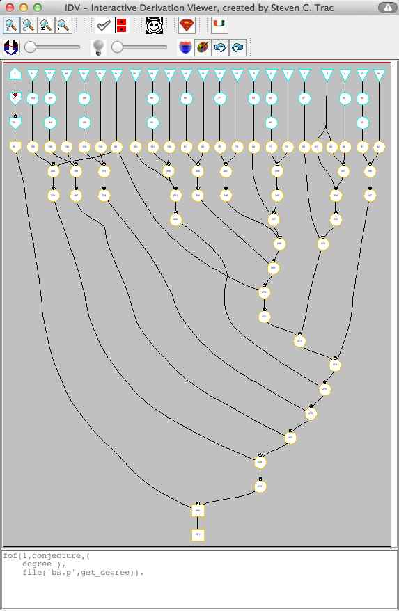

No Counting

Evaluating Proofs by their Artifacts
- Leaf formulae (axioms and conjecture)
- Inferred formulae (ignore the false root)
- Inference steps (≡ parents and inferred formula)
Ranking and Counting
- Ranking proofs is not always meaningful
- Remember, different proofs are good proofs
- Distinguishing proofs by
counting is not always meaningful
- FOF axioms? ... different amounts of information
- Inferred formulae? ... easy to decrease and increase
- Inference steps? ... easy to decrease and increase
What's the Alternative?
- Compare sets of proof artifacts
- Super/subset is sometimes meangingful, e.g., axioms
- Jaccard similarity (∩/∪) seems always meaningful